A flexible wrapper around dygraphs and ggplot2 to graph and annotate financial time series data.
The package provides several ways to add additional information to a simple series vs time data, including horizontal annotations (events highligted by lines and colored bands) and vertical annotations (key levels or regions). Colors and set of labels can be customized and persist across invocations of the package, but sensible defaults are used. To minimize verbiage to get what you want, the package emphasizes options in the main function call rather than multiple functions or pipes to build up a graph.
You can install the development version of FinanceGraphs from
pak::pak("derekholmes0/FinanceGraphs")
# install.packages("FinanceGraphs") # If from CRANDygraphs for time series
Input data and Constants
The package is designed to be flexible with input data. The data can either be in long format (e.g. date,series,value) or wide format (date,col1,col2,…).
The date column can be called anything or be anywhere in the input data.frame, but there must be at least one coercible column with dates and one numeric column. Each column after the date column is treated as a separate series to be graphed, but if the column name (series name) ends in any of ‘.lo, .hi, .f (for forecast),’.flo, .fhi then those columns are treated specially as lower/upper bands or forecast series associated with the prefix of the name.
Consistent colors used for all series and annotations are kept in a local (persistent) settings data.frame. Default color schemes can be changed (again persistently) using the fg_update_aes() function.
Simple Examples
fgts_dygraph(eqtypx, title="Stock Prices", ylab="Adjusted Close")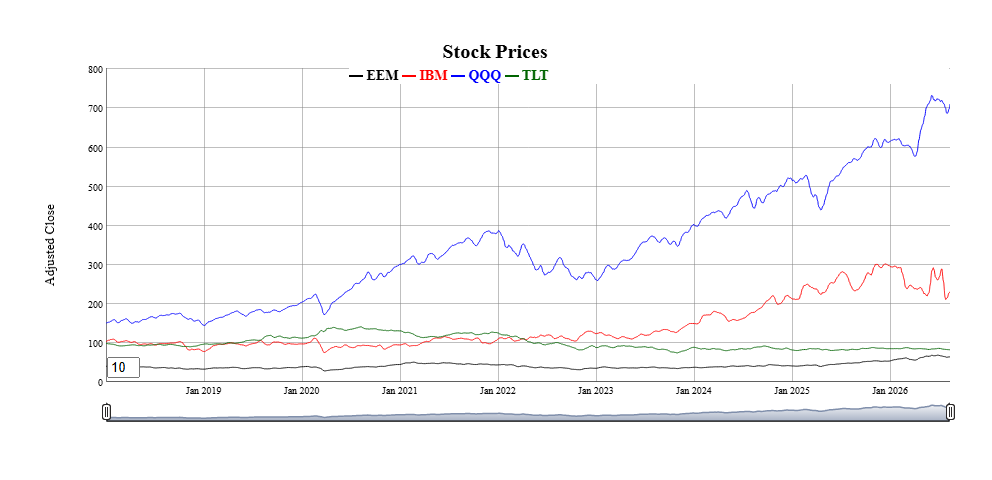
All of the data is displayed on the graph by default, but nost of the time, we want to focus on recent periods and have the option of backing up to all history. The
dtstartfracparameter shows just the last (1-dtstartfrac) percent of the data. Alternatively, a generic date window of the form “start::end” can be used in thedtwindowparameter. Each end of the window can be a full date (e.g. “2022-01-01”) or a relative date string (e.g. “-6m” for 6 months ago.One of the most appealing features of dygraphs is the ability to smooth series interactively. The
rollerparameter adds a rolling average smootherof the specified width (in data points). A default smoothing parameter is chosen depending on the length of the underlying data, but can be overridden using therollerparameter.-
Individual series can be altered in several ways:
- Highlighted with different stroke patterns and width using the
hilightcolsargument with a string (possibly list) of series names,hilightwidthfor a new width, andhilightstylefor a new stroke pattern. - Shown a step plot using the
stepcolsargument with a string (possibly list) of series names. - Hidden from using the
hidecolsargument with a string (possibly list) of series names. - Rebased to a given constant at a particular date.
- Highlighted with different stroke patterns and width using the
fgts_dygraph(eqtypx, title="W/ Focused range, highlights, rebasing",
dtstartfrac=0.6,hilightcols="QQQ",hilightwidth=4,rebase="2024-01-01,100",roller=3)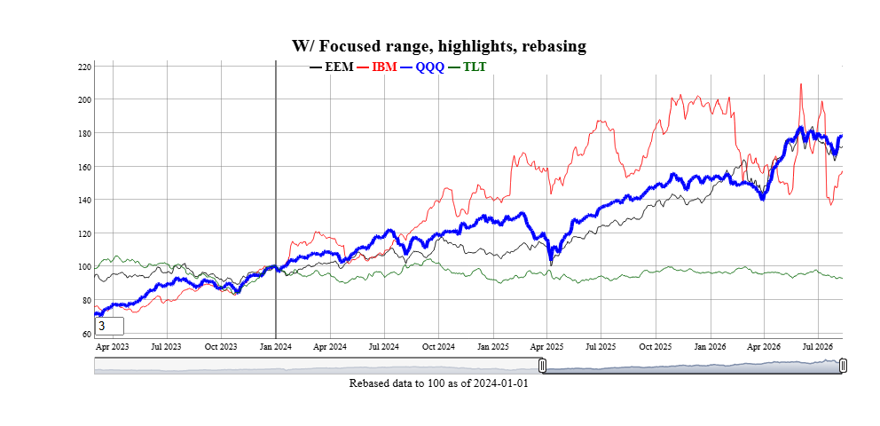
Series can be grouped together into bands by adding new columns in the data with names ending in ‘
.lo’ and ‘.hi’ for lower and upper bounds. Those additional series can represent many things, such as statistical extremes, rolling correlations to other variables (see vignette), or (as a special case) forecast confidence intervals.Horizontal annotations can also be added using the
annotationsparameter. The most common example is a horizontal line at the last observations of each series.
toplot <- reerdta[REGION=="LATAM",.(cop=sum(value*(variable=="COL")),
peers=mean(value),peers.lo=min(value),peers.hi=max(value)),by=.(date)]
fgts_dygraph(toplot,title="COP REER vs Latam peers",ylab="Price",
roller=1,hilightcols="cop",hilightwidth=4,annotations="last,linevalue")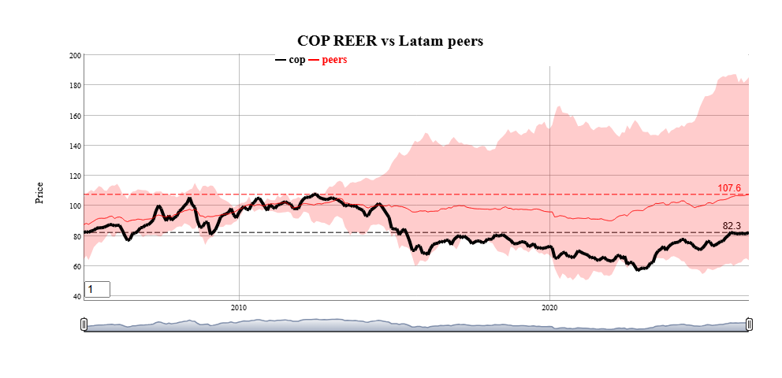
Events
Annotations to a particular date or date range can be added to the graph using the events and event_ds parameters.
The events parameter is a string with one or more (separated by semicolons) event specifications. The event_ds parameter is an optional data.frame with user defined events. (See Vignette for examples) Any events specified with either parameter are additive.
Events in the function call
Events always have a start date and a text label. THey are shown as vertical lines on the graph unless they also have an End Date, in which case the entire region is shaded. Event strings starting with doi (date of interest) are predefined events included with the package. Those are customizable using the fg_update_dates_of_interest() and can be listed using fg_list_dates_of_interest(). Event strings can be added together with semicolons, as in the following example:
smalldta <- eqtypx[date>=as.Date("2023-01-01"),.(date,IBM,QQQ)]
fgts_dygraph(smalldta,title="With Events",ylab="Price",events="doi,regm;doi,fedmoves;date,xmas,2025-12-25")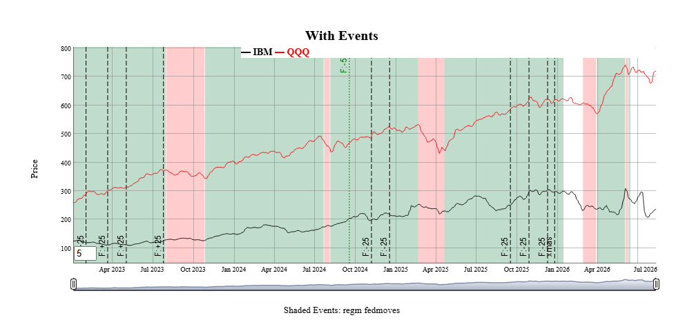
Several types of events are predefined infgts_dygraph() including equity option expirations, IMM CDS roll dates, seasonal events (e.g. “same day in quarter as last observation”) and series extremes. See the vignette for more examples. Events can also be passed in as a data.frame using the event_ds parameter, as shown next.
Event helpers
Custom events can also be passed in data.frame format using the event_ds parameter. The details are in fgts_dygraph(), but the basic columns are a start date date, a text label, and if applicable an end date. Only events within the dates of the original input data are shown.
The package includes a few “event helpers” to make it easy to generate the right formats for given more complicated types of events and exogenous data. See the vignette for examples, but here is an idea of two that can be done.
events_consumer_sent <- fg_cut_to_events(consumer_sent,center="zscore")
head(events_consumer_sent,2)
#> value color END_DT_ENTRY DT_ENTRY runlen
#> 1: 3 #9595FFFF 2016-03-02 2016-01-01 3
#> 2: 2 #CACAFFFF 2016-04-02 2016-03-02 1
fgts_dygraph(smalldta,title="Equity Prices w Sentiment",event_ds=events_consumer_sent)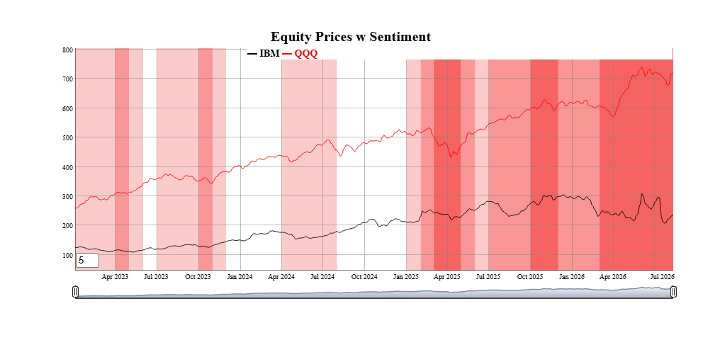
Current event helpers are:| Function | Description |
|---|---|
fg_findTurningPoints() |
Statistically identify turning points in a series |
fg_ratingsEvents() |
Add colored ranges based on analyst credit ratings |
fg_cut_to_events() |
“Cut” a univariate series into colored bands, with two different colors for positive and negative values |
fg_signal_to_events() |
Map a long/short signal to events |
fg_tq_divs() |
Add dividend events from TidyQuant dividend data |
fg_av_earnings() |
Add earnings events from AlphaVantage earnings data |
Forecasts
Forecasts beyond the last day of the dataset can also be added in a consistent way. For example, forecasts (and confidence intervals) for the IBM stock price in new data.frame can be added as follows. Each forecast is shown as the same color as the original series, but dashed to show the transition.
head(example_fcst_set,2)
#> date QQQ.f QQQ.flo QQQ.fhi IBM.f IBM.flo IBM.fhi
#> 1: 2026-03-21 582.8459 574.5719 591.1199 241.965 236.1769 247.7531
#> 2: 2026-03-22 582.8459 571.5502 594.1416 241.965 233.8706 250.0593
fgts_dygraph(smalldta,title="With Forecasts", dtstartfrac=0.7,forecast_ds=example_fcst_set)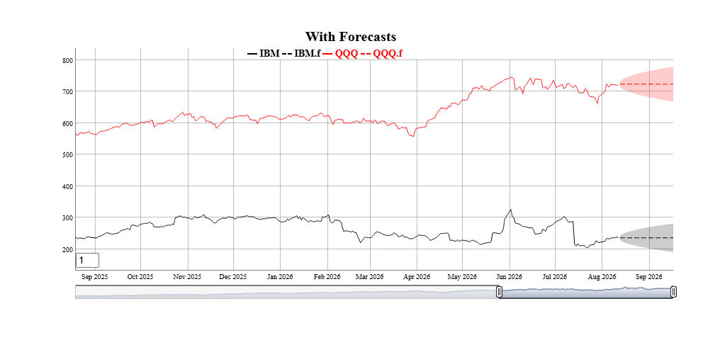
Like events, forecasts can be generated from many packages with different output formats. There is also a “forecast helper” to get their outputs into the appropriate foreast_ds forms
| Function | Description |
|---|---|
fg_sweep() |
Converts tidy forecast objects to forecast_ds form. |
fg_prophet() |
Converts Prophet to forecast_ds form. |
Changing aesthetics and adding “dates of interest”
Default colors for series and annotations can be changed using fg_update_aes() or fg_update_line_colors(). Any changes made to aesthetics colors will persist across loads of the package (unless persist=FALSE is specified). To see what aesthetics are used for any particular function, use fg_print_aes_list() As an example, to make a graduated set of colors for the first 2 series.
fg_get_aes("lines",n_max=2)
#> category variable type value const used helpstr
#> 1: lines D01 color black all Low cardinality line colors
#> 2: lines D02 color red all Low cardinality line colors
fg_update_line_colors( rev(RColorBrewer::brewer.pal(8,"GnBu"))[1:2] )
#> Saved aesthetic updates to C:\Users\DFH\AppData\Local/R/cache/R/FinanceGraphs/fg_aes.RD
fg_get_aes("lines",n_max=3)
#> category variable type value const used helpstr
#> 1: lines D01 color #08589E all Low cardinality line colors
#> 2: lines D02 color #2B8CBE all Low cardinality line colors
#> 3: lines D03 color blue all Low cardinality line colorsNew dates of interest used for the events parameter can also be added. To add (for example) a new FOMC cut of 50bps on 6/16/2026 (after the development of this package), use fg_update_dates_of_interest(). Resetting the lists (and colors) can also be done.
newdoi <-data.frame(category="fedmoves",eventid="F:-50",DT_ENTRY=as.Date("6/16/2026",format="%m/%d/%Y"))
fg_update_dates_of_interest(newdoi)
#> Saved dates of interest file to C:\Users\DFH\AppData\Local/R/cache/R/FinanceGraphs/fg_doi.RD
#> NULL
tail(fg_get_dates_of_interest("fedmoves"),2) |> data.frame()
#> category eventid eventid2 DT_ENTRY END_DT_ENTRY color strokePattern loc
#> 1 fedmoves F:-25 rt:4 2025-10-29 2025-10-29 <NA> <NA> <NA>
#> 2 fedmoves F:-25 rt:3.75 2025-12-10 2025-12-10 <NA> <NA> <NA>
fg_reset_to_default_state("all")
#> Removing dates file and reverting to defaults of package
#> Removing Aesthetics file and reverting to defaults of package
#> Removing User-made Themes and reverting to defaults of package
#> Removing cache Directory
#> fg_reset_to_default_state(all) completedIntegration into Markdown and Shiny
Dygraphs have the very nice feature of allowing synchronized zoom in Markdown or Shiny applications. Each graph with a common group identifier is synchronized. There are times, however, when you want to turn these on or off. The function fg_sync_group() either returns the current group name if called with no parameters, sets the group name with a string, or turns off synchronization with a call fg_sync_group(NULL).
Static Plots for Time Series
Scatter Plots with time dimension enhancements
Key to understanding how time series co-move is a simple scatter plot. The function fg_scatplot() tries to be a concise wrapper around the very comprehensive ggplot2 graphics framework. ggplot2() is a great ecosystem, but requires quite a bit of verbiage to get from idea to presentable graph quickly. The approach used here is to specify broad categories of aesthetics with a formula, while the details are kept behind the hood using the aesthetic sets managed by fg_get_aes() as above. Fuller explanations and more examples are in the accompanying vignette.
This “one-line” approach can be used with both date-based and non-date based datasets. For example, suppose we wanted to plot two asset prices against each other so that we can easily understand both how they co-move, where they have been recently, and where they are now. We will start by making a fake dataset of two sets of two assets each.
set.seed(1)
ndates <- 400;
samp_rw <- function() { 100*(1+cumsum(rnorm(ndates,sd=0.2/sqrt(260)))) }
dts <- seq(as.Date("2021-01-01"),as.Date("2021-01-01")+ndates-1)
dttest <- rbind( data.table(date=dts,ccat="A",px_x=samp_rw(),px_y=samp_rw()),
data.table(date=dts,ccat="B",px_x=samp_rw(),px_y=samp_rw()))A scatter plot of where those two assets are and where they have been is as easy as specifying (in one string!) columns to plot, a column for color, and a term to split the dates into 2 month and 6 month intervals, and finally a term to show where the latest observations are. As with fgts_dygraph(), date partitions can be custom regimes managed by fg_update_dates_of_interest().
fg_scatplot(dttest,"px_y ~ px_x + color:ccat + doi:recent + point:label","lmone",datecuts=c(60,182),title="Splitting dates")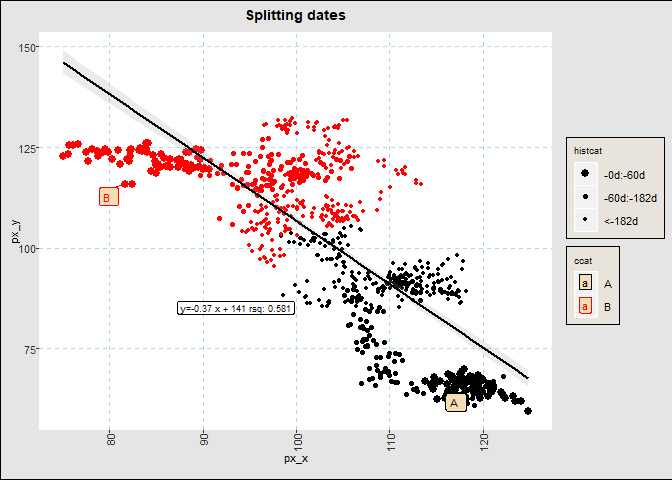
One important feature of the static plots in this package to note is that they include options for switching the colors of large numbers of groups or points from discrete values to continuous values from the RColorBrewer package.fg_scatplot() does not require dates in the input data, and can be useful for communicating comparative analyses as well. The mtcars dataset shows how we can add a lot of information to a basic text scatterplot.
dt_mtcars=data.table(datasets::mtcars)[,let(id=lapply(rownames(datasets::mtcars),\(x) last(strsplit(x," ")[[1]])))]
fg_scatplot(dt_mtcars,"disp ~ hp + color:carb + label:id","lmonenoeqn",n_color_switch=0,title="Text with color switch")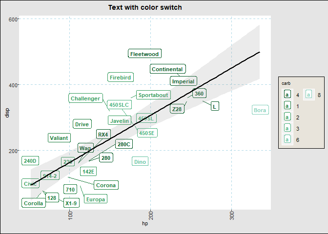
Many more examples that encapsulate a large part of the ggplot2 corpus are in the accompanying vignette.
Time-categorized box plots
One way to visualize multiple time series comparatively with a boxplot or a violin plot. The function fg_tsboxplot() provides a flexible way to split several time series into time categories. Usually, those categories are time periods with increasing horizons, but this function allows for arbitrary periods managed by fg_update_dates_of_interest(). Data can be normalized across historical categories and time series categories. As an example, suppose we would like to see normalized equity prices over the past two years, split into categories of the last week, month (less the last week) and the last quarter.
fg_tsboxplot(narrowbydtstr(eqtypx,"-2y::"),breaks=c(7,90),normalize="byvar",title="Normalized Equity prices by Date category")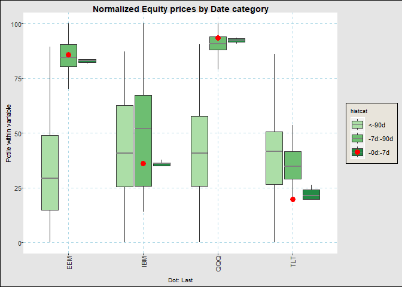
Like fgts_dygraph(), the function can take data in both wide and long formats. Longer formats have the advantage of adding more categorical levels to our graphs. For example, we can plotting recent ranges of the monthly FX Real Exchange Rate dataset in the following way. Here, we split the data into buckets of last 20pct of the months, the first half the months and the last. We will also show the last observation, hide the boxplot whiskers, and reorder the currencies by their relative weakness.
fg_tsboxplot(reerdta,breaks=c(0,0.2,0.5,1),doi="last",orderby="value",boxtype="nowhisker",facetform=". ~ REGION",title="Real Eff. Exch Rates")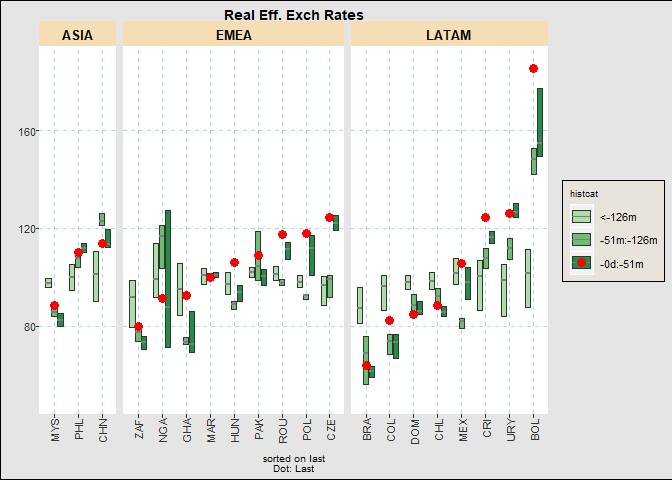
Event Studies
Trying to understand how events or environments may impact prices can be summarized well by plotting their movements relative to a date against time relative to the event. The function fg_eventStudy() integrates a set of dates with a set of time series to plot their relative behavior over the business days before and after each event. It is designed to show reasonably large sets of assets or event dates by switching discrete color scales to gradient scales after a user specified number.
There are several ways to show the data, including path-by-path, statistics by event (i.e. across assets) or by asset (across events), boxplots, or scatter plots of moves at the edge of the intervals.
For example, to see the behavior of various parts of the US yield curve around FOMC cuts, just use the following
dtset <- fg_get_dates_of_interest("fedmoves")[grepl("F:-",eventid),.(DT_ENTRY,text=eventid2)]
fg_eventStudy(yc_CMSUST,dtset,output="pathbyvar",
title="Constant Maturity UST tenors around Fed Cuts")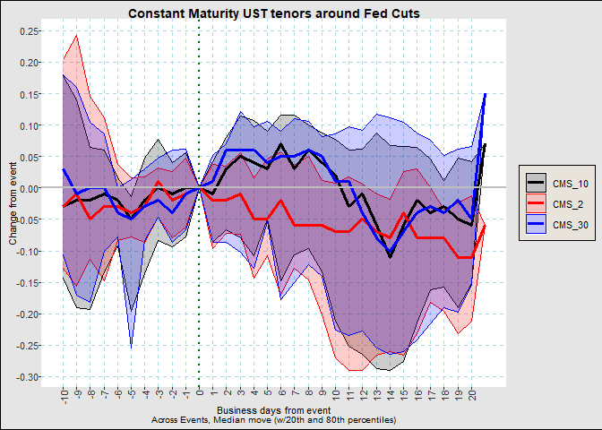
We can see that curves reach their peak steepening around a week after the event. To see this a little more succinctly, we can use
fg_eventStudy(yc_CMSUST,dtset,output="scatter",nbd_back=5,nbd_fwd=6,
title="Constant Maturity UST tenors around Fed Cuts at 5 days")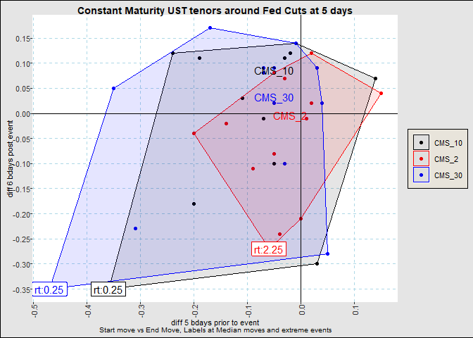